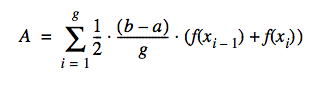
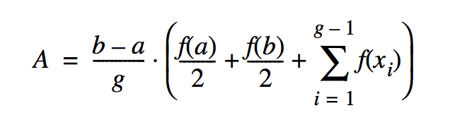

Basic Parallelism using Par¶
Using parallelism solves problems more quickly than using a single-processor machine, as is the case where groups of people solve problems larger than one person can solve. But just as with groups of people, there are additional costs and problems involved in coordinating parallel processors:
We need to have more than one processor work on the problem at the same time. Our machine must have more than one processor, and the operating system must be able to give more than one processor to our program at the same time. Kernel threads allow this in Java. An alternative approach is to have several networked computers work on parts of the problem; this is discussed in Chapters 11 and 12, “Networking” and “Coordination.” of the HPJPC book by Christopher and Thiruvathukal.
We need to assign parts of the problem to threads. This at least requires rewriting a sequential program. It usually requires rethinking the algorithm as well.
We need to coordinate the threads so they perform their operations in the proper order, as well as avoid race conditions and deadlocks. A number of useful facilities are not provided by the standard Java language package. We provide a good collection for your use in our thread package.
We need to maintain a reasonable grain size. Grain size refers to the amount of work a thread does between communications or synchronizations. Fine grain uses very few instructions between synchronizations; coarse grain uses a large amount of work. Too fine a grain wastes too much overhead creating and synchronizing threads. Too coarse a grain results in load imbalance and the underutilization of processors.
Two easy, practical approaches to dividing the work among several processors are executing functions in parallel and executing iterations of loops in parallel. Parallelizing loops will be presented in the next chapter. In this chapter we will discuss running subroutines in parallel.
Executing functions in parallel is an easy way to speed up computation. The chunks of code are already packaged for you in methods; you merely need to wrap runnable classes around them. Of course, there are certain requirements:
The function must be able to run in parallel with some other computation. This usually means that there are several function calls that can run independently.
The function must have a reasonable grain size. It costs a lot to get a thread running, and it doesn’t pay off for only a few instructions.
Two kinds of algorithms particularly adaptable to parallel execution of functions are the divide-and-conquer and branch-and-bound algorithms. Divide-and-conquer algorithms break large problems into parts and solve the parts independently. Parts that are small enough are solved simply as special cases. You must know how to break a large problem into parts that can be solved independently and whose solutions can be reassembled into a solution of the overall problem. The algorithm may undergo some cost in breaking the problem into subparts or in assembling the solutions.
Example: Trapezoidal Numeric Integration¶
Sometimes, a program needs to integrate a function (i.e., calculate the area under a curve). It might be able to use a formula for the integral, but doing so isn’t always convenient, or even possible. An easy alternative approach is to approximate the curve with straight line segments and calculate an estimate of the area from them.
This visual (courtesy of HPJPC) shows the trapezoidal method:

This equation shows how to calculate the area.
We wish to find the area under the curve from \(a\) to \(b\). We approximate the function by dividing the domain from \(a\) to \(b\) into \(g\) equally sized segments. Each segment is \((b - a) / g\) long. Let the boundaries of these segments be \(x_0 = a\), \(x_1\), \(x_1\), … , \(x_g = b\). The polyline approximating the curve will have coordinates \((x_0, f(x_0))\), \((x_1, f(x_1))\), \((x_2, f(x_2))\), …, \((x_g, f(x_g))\).
The area is then given by this formula, which sums the area of all trapezoids:
If we apply that formula unthinkingly, we will evaluate the function twice for each value of x, except the first and the last values. While the correct result would be obtained, it is inefficient and kind of defeats the purpose of going parallel. A little manipulation gives us the following:
We’ve now reduced the problem to computing the parallel sum term, which is represented nicely in Scala.
We present three solutions in Scala:
integrateSequential(): The sequential (i.e. not parallel) solution is aimed at showcasing one of the key benefits of functional programming in general. In many cases, the code closely follows the mathematics you write. Because the code is clear in terms of its intentions, we can adapt the solution for parallel execution.integrateParallel(): The parallel version shows how to get parallel speedup in Scala from the sequential one, simply by addingpar.integrateParallelGranular(): This version shows how to combine parallel and serial execution. Byallowing the user to specify the grain size (number of retangles to do sequentially at a time), it is possible to determine how Scala itself might be chunking the work in the
integrateParallel()solution.
Download the Code¶
git clone https://github.com/LoyolaChicagoCode/integration-scala
Going Scala!¶
Let’s start by looking at integrateSequential().
1 def integrateSequential(a: Double, b: Double, rectangles: Int, f: Fx): Double =
2 val interval = (b - a) / rectangles
3 val fxValues = (1 until rectangles).view.map { n => f(a + n * interval) }
4 interval * (f(a) / 2 + f(b) / 2 + fxValues.sum)
As would be expected, we should be write this the way we think of the problem mathematically:
aandb: The endpoints of the integration intervalrectangles: The number of rectangles to use to approximate the integralf: The function to be integrated.
In the last case, this is where Scala makes our work particularly easy by allowing us to define a proper function type as shown below:
1 type Fx = Double => Double
In our previous Java work (in the book), we had to use Java interfaces for this same task. While seemingly just syntactic sugar, Java’s boilerplate is offputting to computational scientists, who would rather use C and FORTRAN where function parameters are possible. Unlike those choices, however, Scala gives us the compelling aspect of full type checking, which means that we can be assured of excellent performance without the complexity–and sometimes unsafe behavior–that is found in other languages.
Because it is essential to understand the sequential version (the core algorithm) before proceeding, we offer a brief explanation of each line of code, even when obvious, and how we are taking advantage of Scala (when less obvious!)
In line 2, we calculate
intervalusing the formula that was presented earlier. Scala, being pragmatic, is able to do the right thing and treat the entire expression as Double, resulting in a Double value. Scala really shines here by not requiring us to declare every val type, owing to its innate type inferencing mechanism. This results in code that is much easier to comprehend (at least we like to think so).In line 3, this requires a bit more explanation. Working from our equation, recall that our summation term goes from 1 to the number of rectangles minus 0. We use Scala’s until to get the indices. When
rectanglesis small, this is fine. What happens when it is large? The answer depends on whether we are using eager or lazy evaluation. In mathematical/scientific computing, we often need to do a large number of iterations to get a better answer. This is where theviewcomes in. It gives us a lazy sequence that can then be mapped (also lazily) using the user-supplied function,f.In line 4, we are able to plug everything into the derived formular for calculating the trapezoidal integration. Technically, we could have put the
fxValuesval definition in the same line of code, but having it separate makes it easier to understand for new Scala users (one of the goals for our SIGCSE workshop). More importantly, you should be able to write the code this way and not have to worry about losing performance. By setting up this lazy computation, we’re able to compute the sum on demand. Aside from this split, the code here exactly matches the formula we derived for performing trapezoidal integration.
The sequential version of integration presented here is completely side-effect free. That is, all of the work is being done without mutating state. This means that it can immmediately be turned into something parallel in Scala, provided we know where the actual work is being done. Let’s continue this exploration!
Going Parallel¶
The immediately preceding discussion was presented with great care, because what we are about to demonstrate illustrates how one needs to do very little work to take what is sometimes known as an embarrassingly parallel algorithm and make it run in parallel. The term embarrassing is a tad misleading. As we’ll see, the results don’t always follow your intuition. Furthermore, while the results can be gotten quickly, it doesn’t always mean that you are getting the best results possible. For example, as well as Scala does, it still doesn’t do nearly as well as our hand-coded multithreaded Java example from HPJPC. We’ll say more about this later.
Let’s look at the parallel version.
1 def integrateParallel(a: Double, b: Double, rectangles: Int, f: Fx): Double =
2 val interval = (b - a) / rectangles
3 val fxValues = (1 until rectangles).view map { n => f(a + n * interval) }
4 interval * (f(a) / 2 + f(b) / 2 + fxValues.sum)
In this version, observe that we have added the par method call just
before generating the lazy view. This is the only sensible place to add
par, because in mathematical/scientific computing, we know that most of
the parallel potential is found where the loops are. The 1 until
rectangles is where the actual workload is being generated, so it is a
natural place to suggest par.
Testing¶
The following code shows the unit tests for our various integration examples.
1package edu.luc.etl.sigcse13.scala.integration
2
3import org.junit.Test
4import org.junit.Assert.*
5import Integration.*
6import Fixtures.*
7
8/**
9 * Simple JUnit-based tests.
10 */
11class Tests:
12
13 @Test def testSequential(): Unit =
14 assertEquals(333.3, integrateSequential(0, 10, 1000, sqr), 0.1)
15
16 @Test def testParallel(): Unit =
17 assertEquals(333.3, integrateParallel(0, 10, 1000, sqr), 0.1)
18
19 @Test def testParallelGranular(): Unit =
20 assertEquals(333.3, integrateParallelGranular(10)(0, 10, 1000, sqr), 0.1)
21
22end Tests
For the purpose of testing, we set up \(f(x) = x^2\) and integrated it from 0 to 10. The value of this integral should be 333.333333333….
We can’t stress enough the importance of unit tests, especially when working a sequential algorithm into a parallel one. While you are less likely to make mistakes in Scala, it is very easy when trying certain strategies to get the wrong answer. (In fact, one of them, the third, gave an incorrect answer during testing, simply because of a division error I made when computing the number of workers!)
Using the notion of a test fixture, it is possible to specify what function we wish to test without contaminating the general-purpose code we wrote with a specific function to be integrated. See below.
1package edu.luc.etl.sigcse13.scala.integration
2
3// begin-object-Fixtures
4object Fixtures:
5 def sqr(x: Double): Double = x * x
6end Fixtures
7// end-object-Fixtures
Running¶
The tradition of scientific computing is one where users want and need to
be able to run it from the command-line, often in an unattended fashion (say,
on a computing cluster or network of workstations or cloud resources). The
following is the main program we put together to run the integration of
\(f(x) = x^2\) manually. You can specify the number of rectangles, the
number of times to run each of the experiments, and a grain size for testing
the combined parallel/sequential version, integrateParallelGranular().
We’ll say more about this function in our performance discussion.
1package edu.luc.etl.sigcse13.scala.integration
2
3import Integration.*
4import Fixtures.sqr
5
6object Main:
7
8 def main(args: Array[String]): Unit =
9 try
10 require { 2 <= args.length }
11 val rectangles = math.max(args(0).toInt, 1000)
12 val n = math.max(args(1).toInt, 1)
13 val grainSize = if args.length == 3 then math.min(args(2).toInt, rectangles) else rectangles
14
15 timedRun(rectangles, n, "sequentially", integrateSequential)
16 timedRun(rectangles, n, "in parallel", integrateParallel)
17 timedRun(rectangles, n, "in parallel with " + grainSize +
18 " rectangles per serial worker", integrateParallelGranular(grainSize))
19
20 catch
21 case _: NumberFormatException => usage()
22 case _: IllegalArgumentException => usage()
23
24 def usage(): Unit =
25 Console.err.println("usage: rectangles (>= 1000) " +
26 "numberOfRuns (>= 1) [ grainSize (rectangles % grainSize == 0) ]")
27
28 def timeThis[A](s: String)(block: => A): A =
29 val time0 = System.currentTimeMillis
30 val b = block
31 val time1 = System.currentTimeMillis - time0
32 println("Timing " + s + " = " + time1)
33 b
34
35 // begin-timedRun
36 def timedRun(rectangles: Int, n: Int, how: String,
37 integrationStrategy: (Double, Double, Int, Fx) => Double): Unit =
38 timeThis(how):
39 print("Computing area " + how + "; now timing " + n + " iterations")
40 val area: Double = (1 to n).map { _ => integrationStrategy(0, 10, rectangles, sqr) }.head
41 println("; area = " + area)
42
43 // end-timedRun
44end Main
Initial Experiments with Performance¶
This is still being written up but will be demonstrated live.
1 def integrateParallelGranular(grainSize: Int)(a: Double, b: Double, rectangles: Int, f: Fx): Double =
2 require { rectangles % grainSize == 0 } // can relax this later
3 val workers = rectangles / grainSize
4 val interval = (b - a) / workers
5 val fullIntegration = (0 until workers).view.map:
6 n =>
7 val c = a + n * interval
8 integrateSequential(c, c + interval, grainSize, f)
9 fullIntegration.sum
Previous Work¶
This example was developed as part of High-Performance Java Platform Computing by Thomas W. Christopher and George K. Thiruvathukal.
Todo
|pdf| PDF of Book https://hpjpc.googlecode.com/files/HPJPC%20Christopher%20and%20Thiruvathukal.pdf
git clone https://github.com/LoyolaChicagoCode/hpjpc-source-java